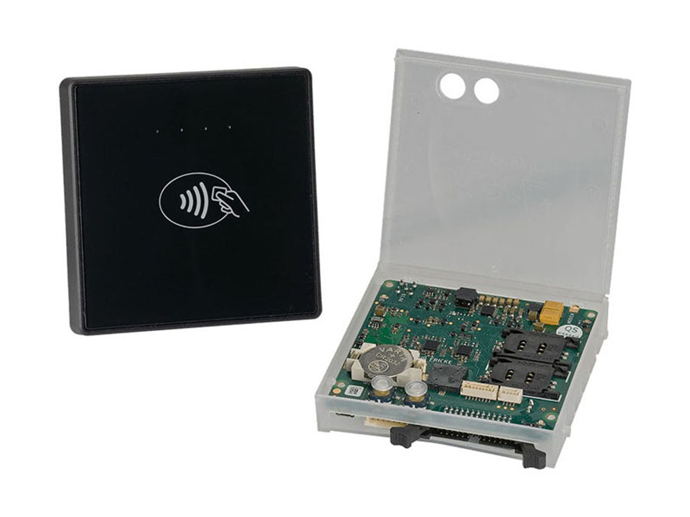

If you are looking for a Netherlands PSD2 API developer in India, the first question is rarely the rate. It is whether the team has lived inside PSD2 constraints: strong customer authentication, consent that expires quietly, TPP identity checks, and error responses the Berlin Group specification treats as routine. Teams that have not tend to ship a happy-path demo and call it an integration.
Viantha Solutions builds backend and integration software for Dutch fintechs, payment companies and lenders from Tiruchirappalli in Tamil Nadu, with headquarters in Singapore. This guide covers what Dutch teams hand over, how DNB and AFM shape the work, and what the local working style is really like.
Most teams comparing a PSD2 API integration Amsterdam vendors have shortlisted at least one offshore partner; the filter that matters is whether anyone on that team has debugged SCA and consent failures in production.
Key Takeaways
- PSD2 delivery is mostly consent handling and error mapping. SCA step-up failures are where timelines slip, not the happy path.
- The Berlin Group interfaces published by ING and Rabobank are the practical XS2A reference most Dutch integrations run against.
- DNB supervises prudential and AML matters, AFM covers conduct. Evidence, not frameworks, is what satisfies either.
- Dutch engineers are direct and English-speaking. They will challenge your estimate on the call. That is a feature.
In This Guide
What Dutch Teams Actually Hand Over
Offshore work in the Netherlands sits in three places, all with hard edges, which is exactly why they travel well.
Account information and payment initiation
The bulk of PSD2 work is consent plumbing: creating a consent, redirecting or decoupling the user to their bank, receiving the access token, polling account data, then refreshing before expiry hits. Get a state wrong and the user sees a bank error page with your brand behind it. Our API integration practice treats it as a standard build.
Onboarding, KYC and screening
Dutch payment institutions and lenders carry onboarding obligations: identity verification, sanctions screening, and an audit trail someone can read two years later. It is patient work, and it gets under-scoped most often.
Event pipelines and legacy cores
Plenty of Dutch backends are older Java estates with batch jobs and message queues. Adding a modern API layer without breaking nightly processing is where an experienced Dutch fintech backend developer offshore earns the fee. Nobody wants a rewrite, they want the new interface to coexist with what already runs.
PSD2, Strong Customer Authentication and the Berlin Group Interfaces
PSD2 itself is short. The work lives in the surrounding specifications and in how issuers behave in practice, and that is where an offshore PSD2 developer Netherlands from India earns any recommendation.
Strong customer authentication is the part that breaks projects. Redirect flows, decoupled approaches with a mobile app, biometric step-up, fallback when the issuer's app is unavailable: each fails differently, and decline reasons do not map cleanly onto the specification. Budget test cycles against real issuers, not only against a mock. A Netherlands PSD2 API developer India team that has only run sandbox tests will discover this in production week.
On the XS2A side, an ING Rabobank API integration India engagement means building against the Berlin Group interfaces published by ING and Rabobank, alongside whatever account providers you target. Naming those banks is about interface standards, not client relationships. The work is fiddly: fixed field sets, mandated error codes, pagination rules and consent objects that behave differently per provider. It is repetitive integration that offshore teams do well once someone senior has reviewed it.
As a rule of thumb, a consent and account information flow takes about as long again as the demo suggested, once error mapping, retries and logging are in.
DNB and AFM: Who Asks What
The Netherlands has two regulators, and they pull in different directions.
De Nederlandsche Bank, DNB, handles prudential supervision: licensing for payment and e-money institutions, safeguarding of funds, and anti-money-laundering supervision under the Wwft. If you are licensed, DNB's questions arrive as evidence requests: who has access to what, how long records are kept, how a transaction is traced end to end.
The Autoriteit Financiële Markten, AFM, is the conduct regulator. Its interest is how the product behaves for the customer: fair presentation, disclosure, complaint handling, and whether a consumer can understand what they agreed to. Choosing a DNB AFM compliance API developer comes down to whether the team has produced audit evidence before, not whether it can name the two regulators.
The honest observation: licensing and passporting timelines with DNB take longer than founders expect. Build in your own environment first and treat the supervisory conversation as a separate track.

The Netherlands as a European Gateway
Amsterdam is the obvious landing point, with Eindhoven and Rotterdam carrying real clusters too. The ecosystem is dense: payment companies, acquirers, a mature software sector, and firms like Adyen and Mollie setting the local bar for what an API should look like. That is market context, not clients of ours. Dutch teams have seen good developer experience and will judge yours against it.
A licence granted by DNB can be passported across the EEA, which is why so many companies start here. We are a European Open Banking developer India team, so one crew can cover the German and Belgian interfaces too, since the underlying Berlin Group patterns are shared.
How Dutch Teams Like to Work
Dutch engineering culture is direct, English-speaking and flat. There is no title hierarchy to route a question through, and a junior developer will contradict a senior one if they think the estimate is wrong. On a call with an offshore team, your assumptions get tested early and out loud.
Take it as a signal rather than an insult. A Dutch client who challenges an estimate in the first call has read the document, and silence afterwards means agreement. What nobody wants is a vendor that agrees to everything and reports green for six weeks.
Meetings run short with a written agenda, decisions get recorded, and nobody waits for permission to raise a blocker. Teams that treat Dutch directness as the fastest route to the real risk end up with better architecture.
Engagement, Hours and How the Pilot Runs
The stack is Spring Boot on the backend, React for interfaces, AWS for deployment.
Hours work better than people assume. Indian standard time is four and a half hours ahead of Dutch time in winter, so our afternoon and early evening covers the Dutch working day, and the overlap window goes into the engagement note.
- Week 1 — Technical discovery. Our engineer and yours walk the existing system. You receive a written scope with assumptions listed.
- Weeks 2–4 — Paid pilot. One consent or payment flow, delivered into your repository, on your infrastructure.
- Month 2 onward — Dedicated team. Same engineers, expanded scope, weekly demo instead of status emails.
For compliance: NDA first, ISO 27001 aligned processes, engineers inside your access controls, and no production personal data in development. We do not claim certifications we do not hold, and no offshore arrangement removes your own supervisory obligations. If you want to check fit quickly, send us a short outline of the flow and an engineer replies the same working day.
FAQs Dutch Clients Ask Us
Can you build SCA and consent flows into an existing Spring Boot backend?
Yes. Consent authorisation, redirect and decoupled SCA handling, token refresh and revocation, plus the error mapping the specification expects. We integrate into the backend you already run rather than proposing a rewrite, which is covered on our API integration page.
How do DNB and AFM requirements show up in the code?
As artefacts: consent records, audit logs, retention routines, traceable transaction identifiers and error messages a consumer can act on. DNB leans prudential and AML, AFM leans conduct, and both are satisfied by evidence you can hand over, not a framework claim.
What hours does an India team work with a Dutch client?
We cover the Dutch working day with an Indian afternoon and early evening shift, agreed in writing at the start. Work continues outside that window, so progress shows up before your morning. To discuss it live, look at how we structure engagements or book a call.
Talk to an Engineer, Not a Sales Rep
Describe the integration you need and the system it has to fit into. we will tell you honestly what it takes and whether we are the right team for it.
Start a Conversation Explore Services